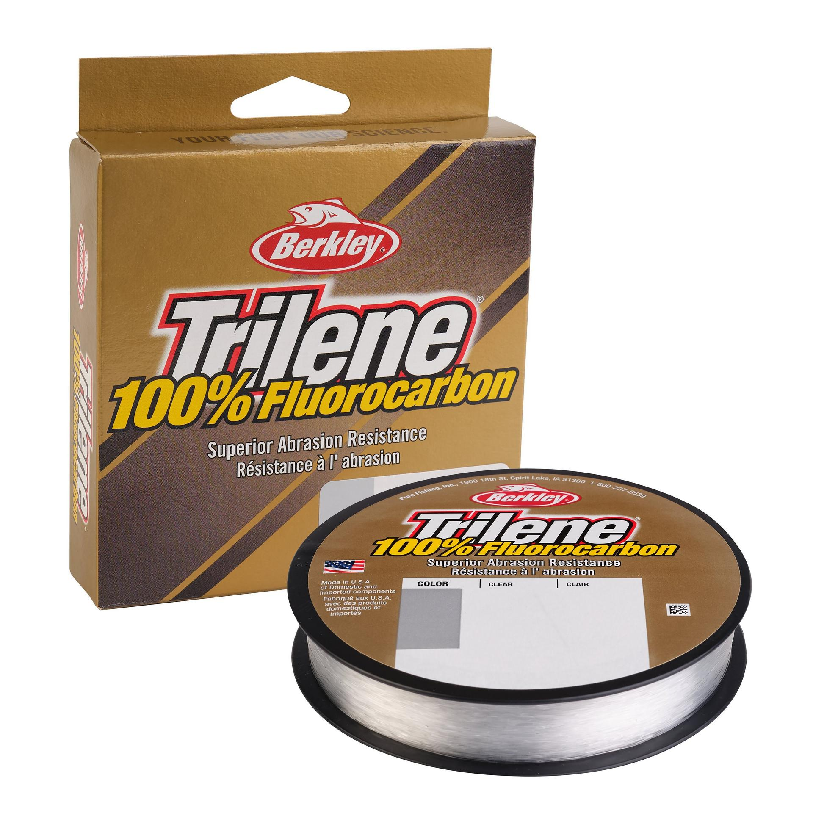

Berkley Trilene 100% Fluorocarbon
Diameter chart, reel capacity & backing guide

This Trilene 100% Fluorocarbon guide covers three US packages: 10 lb on a 2,000-yard bulk spool, and 15 and 20 lb on 200-yard filler spools. These are the packages confirmed for this chart, not the full product range. Check your own label if you have a different package.
- Construction
- 100% PVDF fluorocarbon main line
- Listed strengths
- 10-20 lb
- Line type
- Fluorocarbon main line
Full-spool fluorocarbon or a measured working length?
Berkley identifies this as 100% PVDF main line, distinct from fluorocarbon-coated nylon and its separate leader products. The verified 15 and 20 lb filler options are .015 and .017 in; check reel capacity before choosing them for a small spool. Backing can reserve the documented fluorocarbon for the working portion, provided the connection stays beyond the line you need to fish.
How much Trilene 100% Fluorocarbon will fit?
Calculated estimates, not measured fills. Stop at the reel manufacturer's fill level even if some line remains.
Berkley 100% Fluorocarbon diameter chart
US manufacturer-label evidence only: TF2010-15 at 10 lb/2000 yd, TLFFS15-15 at 15 lb/200 yd, and TLFFS20-15 at 20 lb/200 yd. Both diameter units are printed independently on each label. Other strengths and package combinations are intentionally omitted; these photographs do not establish stock availability.
| Strength | Inches | mm | Spools (yd) |
|---|---|---|---|
| 0.012 | 0.300 | 2000 | |
| 0.015 | 0.380 | 200 | |
| 0.017 | 0.430 | 200 |
Choosing your Trilene 100% Fluorocarbon strength
The documented 10 lb bulk spool is .012 in/.30 mm and contains 2000 yd. That is a bulk supply for planned fills, not an instruction to put the whole package on one reel.
The 15 lb filler label prints .015 in/.38 mm and 200 yd. Compare that diameter with the reel's rating when planning a baitcasting fill or a shorter working length over backing.
The 20 lb filler label prints .017 in/.43 mm and 200 yd. Its larger cross-section leaves less line on a given spool than the .015 in option; choose within the rod, lure, and reel requirements.
No numeric estimate is offered here for the remaining strengths simply because they appear in a store selector. The exact diameter and package must both be documented.
This is a source-based specification and setup guide, not a hands-on performance or aging test.
Want a guided recommendation?
Continue in the Setup WizardSame pound test, different diameters
At your selected strength
Loading diameter comparisons...
What changes with another line?
Nearby diameters in the line database
| Line | Strength | Inches | Difference |
|---|---|---|---|
| Loading line database... | |||
Backing, working line & leaders
Separate bulk supply from reel fill
The 10 lb row documents 2000 yd, while the 15 and 20 lb rows document 200 yd. Measure each working length and keep the remaining line with its original strength and model identification.
Budget the working length
Leave enough fluorocarbon for casting, fish movement, and later trimming. When using backing, account for that working length before filling the remaining spool space.
Keep main line and leader identities separate
A short section used as a leader does not turn this product into Berkley's dedicated leader formulation. Do not substitute ProSpec, Vanish, Trilene XL Fluorocarbon, or a coated line's numbers into this chart.
How Much Fits on These Reels?
Estimated full-spool capacity for the Trilene 100% Fluorocarbon strength selected above, with no backing. These are calculated examples, not physical tests or recommendations for every pairing.
Loading capacity estimates...
Trilene 100% Fluorocarbon questions, answered
Is this 100% fluorocarbon or coated nylon?
Berkley specifies a proprietary 100% PVDF formula for Trilene 100% Fluorocarbon. This page is for that mainline product, not fluorocarbon-coated nylon.
Why are only 10, 15, and 20 lb included?
Those are the strengths for which the inspected manufacturer package labels provide exact diameters and lengths. The current official selector lists more strengths but leaves diameter metadata blank.
Why is the 10 lb package 2000 yd?
The verified photograph is the TF2010-15 bulk spool, SAP 1564072. A 200 yd filler package is a separate package identity and is not inferred from that bulk label.
Are the retailer diameter tables being used as the source?
No. For 15 and 20 lb, the source is the manufacturer's printing on the actual spool pictured by the retailer. The printed model codes and SAP numbers match official Berkley US records.
Why do the inch and metric numbers not convert perfectly?
Both are separately printed rounded label values. This chart preserves them; capacity calculations use the published inch diameter rather than replacing it with a conversion of the rounded metric field.
Specifications & sources
Sources reviewed 2026-09-13. US manufacturer-label evidence only: TF2010-15 at 10 lb/2000 yd, TLFFS15-15 at 15 lb/200 yd, and TLFFS20-15 at 20 lb/200 yd. Both diameter units are printed independently on each label. Other strengths and package combinations are intentionally omitted; these photographs do not establish stock availability. The product image identifies the family, not every selectable strength or the source edition. Match your own package before applying these estimates.
Calculations use the catalog's listed inch diameters. Published inch and millimeter values may differ slightly because of rounding.
- Berkley US Trilene 100% Fluorocarbon Filler Spool Manufacturer product identity, construction, and product code/model matching. Numeric diameter metadata is blank; not the numeric source.
- Berkley US Trilene 100% Fluorocarbon Bulk Spool Manufacturer product identity, construction, and product code/model matching. Numeric diameter metadata is blank; not the numeric source.
- Manufacturer package photograph: fluoro official 10 bulk label Read the actual Berkley label in the photograph. Hosting site descriptions or test results are not the numeric authority.
- Manufacturer package photograph: fluoro 15 tw label Read the actual Berkley label in the photograph. Hosting site descriptions or test results are not the numeric authority.
- Manufacturer package photograph: fluoro 20 trident label Read the actual Berkley label in the photograph. Hosting site descriptions or test results are not the numeric authority.
- Berkley manufacturer construction guide and original photograph context Official article context; performance claims are attributed, not independently tested.